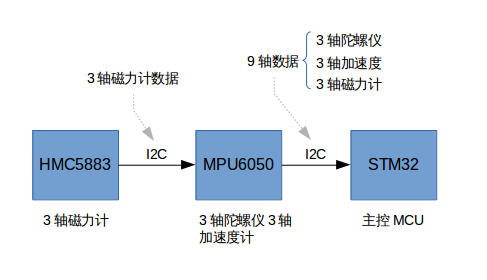
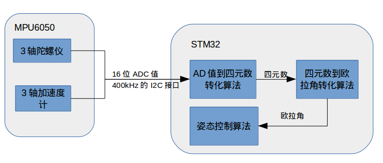

陀螺儀，測量角速度，具有高動態特性，但是它是一個間接測量角度的器件，它測量的是角度的導數，角速度，要將角速度對時間積分才能得到角度。
如果這個世界是理想的，美好的，那我們的問題到此就解決了，不過很遺憾，現實是殘酷的，誤差的引入，使得積分出現了問題。
假設陀螺儀固定不動，理想角速度值是0dps(degree per second)，但是有一個偏置0.1dps加在上面，於是測量出來是0.1dps，積分一秒之後，得到的角度是0.1度，1分鐘之後是6度，還能忍受，一小時之後是360度，轉了一圈，也就是說，陀螺儀在短時間內有很大的參考價值。
陀螺儀就是內部有一個陀螺，它的軸由於陀螺效應始終與初始方向平行，這樣就可以通過與初始方向的偏差計算出實際方向。傳感器MPU6050實際上是一個結構非常精密的芯片，內部包含超微小的陀螺。陀螺儀運轉一段時間以後，noise和offset會導致數據偏差，需要藉助其它傳感器進行較正。
使用陀螺儀獲得角度，一定要考慮積分誤差的問題。
加速度計可以測量加速度,包括重力加速度,於是在靜止或勻速運動的時候,加速度計僅僅測量的是重力加速度,而重力加速度與剛才所說的R座標系是固連的,通過這種關係,可以得到加速度計所在平面 與 地面 的角度關係.
但是加速度計若是繞著重力加速度的軸轉動,則測量值不會改變,也就是說無法感知這種水平旋轉。
MPU-60x0是全球首例9軸運動處理傳感器。它集成了3軸MEMS陀螺儀，3軸MEMS加速度計，以及一個可擴展的數字運動處理器DMP（Digital Motion Processor），可用I2C接口連接一個第三方的數字傳感器，比如磁力計。擴展之後就可以通過其I2C或SPI接口輸出一個9軸的信號（SPI接口僅在MPU-6000可用）。MPU-60x0也可以通過其I2C接口連接非慣性的數字傳感器，比如壓力傳感器。
MPU-60x0對陀螺儀和加速度計分別用了三個16位的ADC，將其測量的模擬量轉化為可輸出的數字量。為了精確跟蹤快速和慢速的運動，傳感器的測量範圍都是用戶可控的，陀螺儀可測範圍為±250，±500，±1000，±2000°/秒（dps），加速度計可測範圍為±2，±4，±8，±16g。一個片上1024 字節的FIFO，有助於降低系統功耗。和所有設備寄存器之間的通信採用400kHz的I2C接口或1MHz 的SPI接口（SPI僅MPU-6000可用）。對於需要高速傳輸的應用，對寄存器的讀取和中斷可用20MHz的SPI。另外，片上還內嵌了一個溫度傳感器和在工作環境下僅有±1%變動的振盪器。
在crazepony上，MPU6050,HMC5883傳感器之間的連接如下圖所示。

在Crazepony-II上，測試了軟件解算四元素，然後通過四元素解算姿態角這種實現方式，其實總的來說，並沒感覺36MHz的主控壓力有多大，沒有出現機身不穩，卡死的情況。

同時，本著務實他的態度，我們也測試了MPU6050的硬解四元素，即從IIC總線上讀到的數據不再是MPU60x0的AD值，而是通過初始化對DMP引擎的配置，從IIC總線上讀到的直接就是四元素的值，從而跳過了程序通過AD值計算四元素這個看起來繁瑣的步驟。測試結果是，機身反應的確要比之前反應靈活，最關鍵的一點是，這樣得出的偏航角（Yaw）很穩很穩，基本不會漂移或者說漂移小到了可以容忍的地步。
最後，MPU60x0的強大之處不僅於此，它支持一個從IIC接口，可以外部接上一個磁力計，如HMC5883，這樣一來，DMP引擎可以直接輸出一個絕對的方向姿態，即能夠輸出一個帶東西南北的姿態數據包，很厲害的樣子。在Crazepony-II第四版將會加上這樣一個磁力計，相信它再也不會迷路了~~